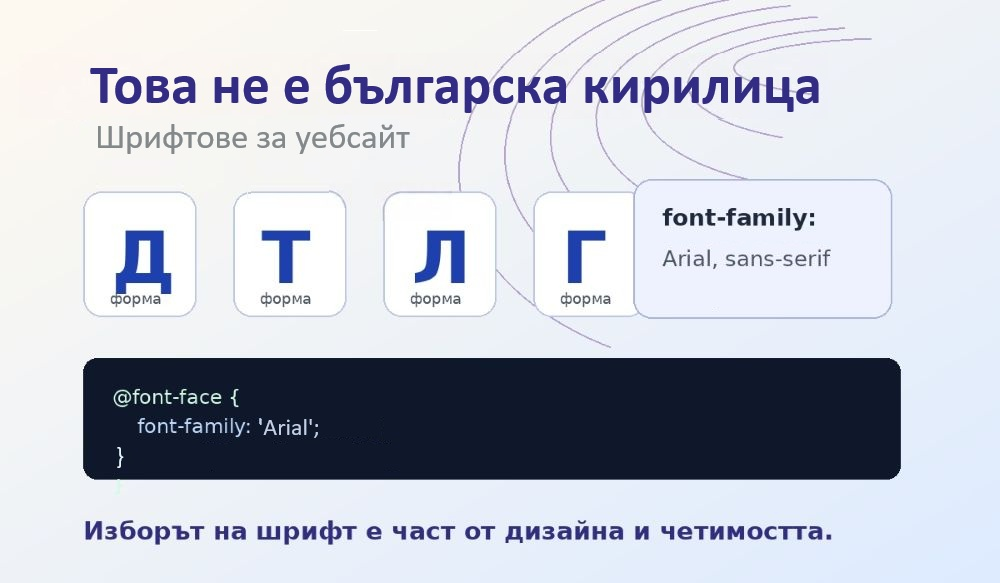
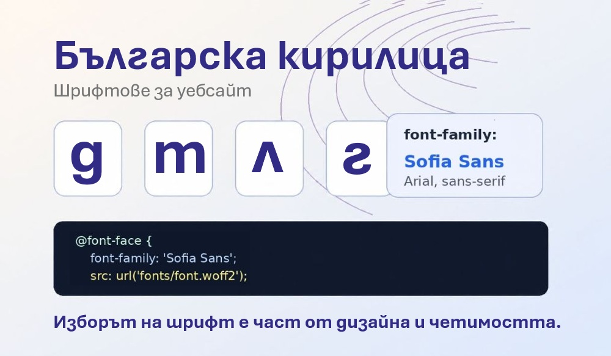

Българска форма на кирилицата
Какво означава това?
Някои шрифтове показват кирилицата с руска или обща славянска форма. При българската форма някои букви, например „д“, „т“, „г“ и „л“, изглеждат по-близо до начина, по който сме свикнали да ги виждаме в български текстове.
За да може браузърът да избере правилните локализирани форми,
в HTML документа е зададено lang="bg".
Откъде можем да намерим подходящи шрифтове?
- Google Fonts
- localfonts.eu
- 1001fonts.com
Важно е да се проверява лицензът на шрифта. Ако пише „free for personal use only“, не е добра идея шрифтът да се разпространява публично като част от проект.
Как включваме шрифт в статичен сайт?
В този проект шрифтът е включен чрез @import в CSS файла:
Примери
Файлове с разширения .jpg и .jpeg съдържат компресирани изображения. Размерът трябва да е подходящ за Уеб.

